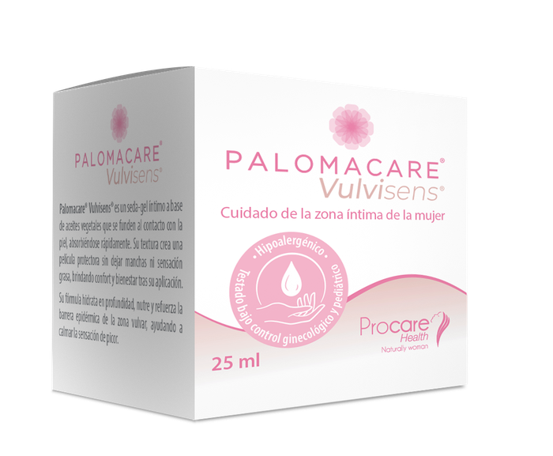
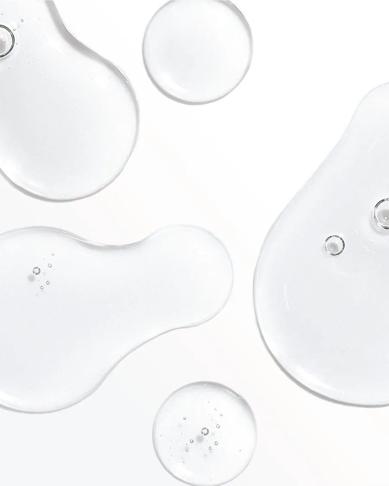
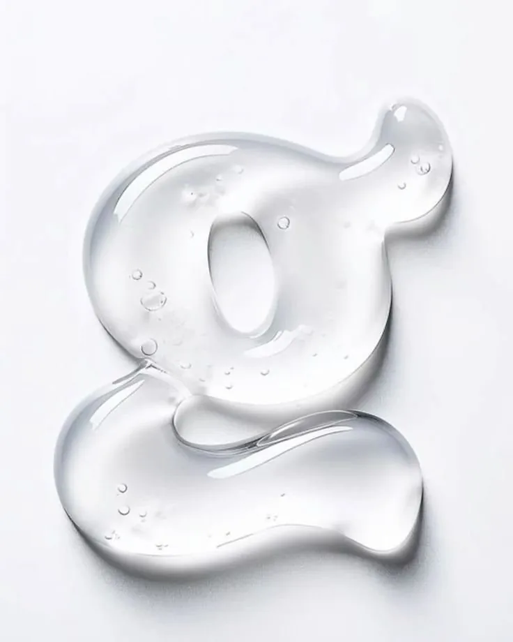
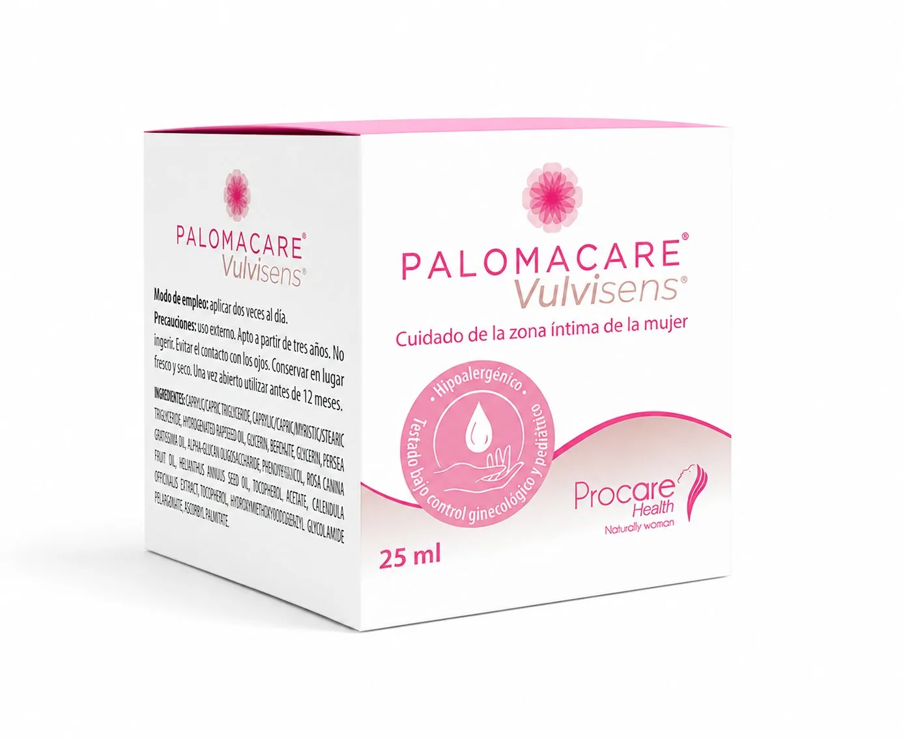
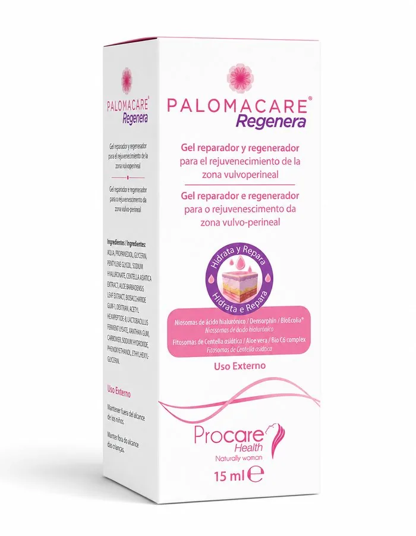
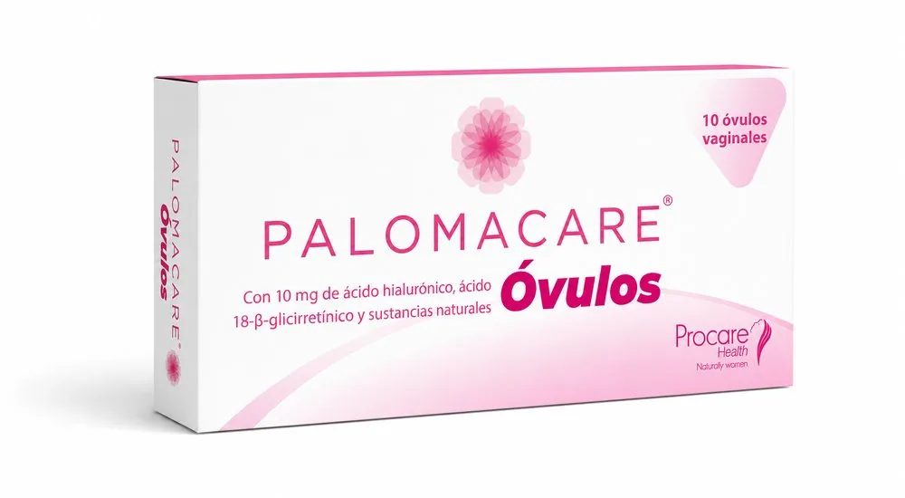
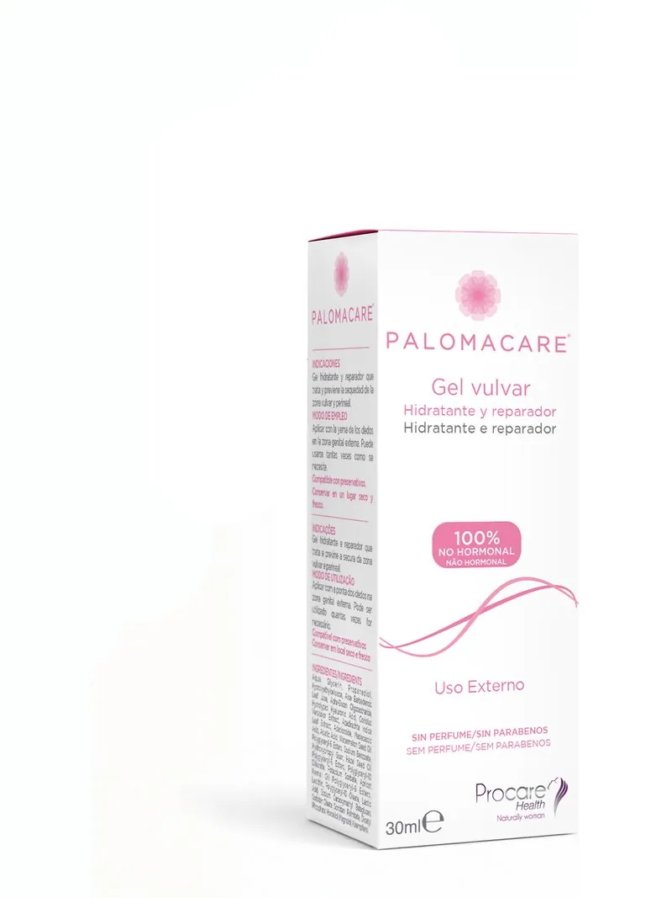

Confort vulvar cuando el picor, la sequedad y la tirantez no dan tregua
Palomacare® Vulvisens® es un seda-gel íntimo a base de aceites vegetales que hidrata, nutre y refuerza la barrera epidérmica de la zona vulvar, ayudando a calmar el picor.
Pensado para mujeres con liquen escleroso vulvar, en la peri y postmenopausia, y apto también para niñas y adolescentes.

El picor vulvar, un síntoma frecuente e infradiagnosticado
El picor mantiene el ciclo picor-rascado, altera el sueño, la vida sexual y el bienestar psicológico, y la vergüenza retrasa la consulta.
- 70 %
de las pacientes de una consulta especializada en vulva refieren el picor como síntoma más frecuente.
- 67,3 %
de los médicos de familia en Reino Unido atienden más de 5 pacientes al mes con síntomas vulvares, siendo el picor el más común.
- 5-10 %
de prevalencia de prurito vulvar en la población general alemana; la real probablemente está infraestimada.
Fuentes: Raef HS, Elmariah SB. Front Med. 2021; Woelber L et al. Dtsch Arztebl Int. 2020; Sullivan AK et al. J Eur Acad Dermatol Venereol. 1999; Kandanearachchi P et al. Arch Hell Med. 2018.
Tratamiento coadyuvante y de mantenimiento
Recomendado para el mantenimiento del confort en situaciones en las que se producen sequedad, picor y tirantez.
Una fórmula sin corticoides, diseñada para calmar el picor, apoyar la barrera cutánea y aportar confort diario.
- Película protectora
Textura seda-gel
Los aceites se funden al contacto con la piel y se absorben rápido, dejando una película protectora sin manchas ni sensación grasa.

Ayuda a calmar el picorCalmapsin®
Su activo, hidroximetoxiiodobencil glicolamida pelargonato (AG1549), es un análogo de capsaicinoide que modula el canal TRPV1, punto de convergencia de varias vías del picor, sin sensación de quemazón.
- Confort vulvar
Activos botánicos y lípidos
Aguacate, rosa mosqueta, girasol, caléndula, glicerina, antioxidantes (tocoferol, palmitato de ascorbilo) y un prebiótico (alfa-glucano oligosacárido) que ayuda a mantener el equilibrio de la microbiota.

HidrataciónGlicerina
Ayuda a mantener la hidratación de la piel gracias a su acción humectante que retiene el agua.
¿Qué pacientes pueden beneficiarse?
Palomacare® Vulvisens® está pensado para el mantenimiento del confort vulvar en situaciones con sequedad, picor y tirantez.
- Pacientes con liquen escleroso vulvarComo cuidado complementario de la piel vulvar, junto al tratamiento que usted haya pautado.
- Mujeres en peri y postmenopausiaCon sequedad, picor y tirantez vulvar.
- Niñas y adolescentesApto desde los 3 años; testado bajo control pediátrico.
- Pieles vulvares sensiblesMujeres con sequedad y sensibilidad que buscan un cuidado diario cómodo.
Cómo se aplica Palomacare® Vulvisens®
Es un cosmético de cuidado: debe mantener el tratamiento que usted le haya indicado.
Zona vulvar externa limpia y seca
Aplicar una fina capa
Dos veces al día
La ciencia detrás del alivio
Datos preclínicos in vitro sobre Calmapsin®. Describen el mecanismo, no sustituyen a los resultados en personas.
- 37,8 %
de inhibición de la activación de TRPV1 con solo 1 µM (IC₅₀ 19,90 µM), en células SH-SY5Y-TRPV1.
- 93,8 → 3,9 %
de corriente TRPV1 evocada por capsaicina remanente con vehículo frente a Calmapsin® 10 µM (patch-clamp, TRPV1 humano; p<0,0001).
- 1,4-2,0×
de recuperación de la expresión de 6 genes de barrera (CDSN, DSC1, DSG1, FLG, IVL, LOR) en epidermis reconstruida bajo un cóctel inflamatorio.
- −40 %
de especies reactivas de oxígeno en queratinocitos con estrés oxidativo inducido por H₂O₂.
Fuente: López-González MJ et al. IFSCC Magazine. 2020;1. Datos in vitro.
Evidencia clínica
Estudios bajo control ginecológico y pediátrico. Valoración mediante cuestionario de las participantes.
- 22 mujeres, 25-65 años100 %
refirió reducción del picor, la sequedad y la irritación. Mujeres con sequedad y sensibilidad vulvar; 2 aplicaciones al día durante 28 días.
- 20 niñas, 4-13 años> 75 %
refirió una sensación inmediata y duradera de confort. 2 aplicaciones al día durante 14 días.
Fuente: Prospera Biotech. Datos en archivo.
Recursos para su consulta
Descargue la documentación del producto y el material para entregar a sus pacientes.
Instrucciones de uso (IFU)
Prospecto completo en PDF: modo de uso, advertencias y composición.
Descargar IFUMaterial para pacientes
Folleto informativo para entregar en consulta.
Descargar folletoReferencias y presentación científica
Resumen de la ponencia del Lichen Hub de Milán y bibliografía.
Descargar presentaciónMuestras
Solicite muestras para ofrecer a sus pacientes.
Solicitar muestras

Lleve Palomacare® Vulvisens® a su consulta
Solicite muestras para que sus pacientes puedan probarlo y material informativo para entregar en consulta.
Preguntas frecuentes
¿Es un medicamento?
No. Es un cosmético para el cuidado de la zona íntima de la mujer.
¿Sustituye al tratamiento pautado en liquen escleroso?
No. Es un cuidado complementario de la piel vulvar y no sustituye el tratamiento indicado por el profesional.
¿Se puede usar en niñas?
Sí, a partir de 3 años. Se testó bajo control pediátrico en 20 niñas de 4 a 13 años.
¿Dónde pueden adquirirlo mis pacientes?
En nuestra farmacia online. Puede facilitarles el enlace o entregarles el material informativo de consulta.
¿Con qué frecuencia se aplica?
Dos veces al día, en una fina capa sobre la zona vulvar externa limpia y seca.
Referencias bibliográficas
- Raef HS, Elmariah SB. Vulvar Pruritus: A Review of Clinical Associations, Pathophysiology and Therapeutic Management. Front Med. 2021;8:649402.
- Mashoudy KD et al. Scratching the Surface: A Comprehensive Guide to Understanding and Managing Vulvovaginal Itching. Am J Clin Dermatol. 2025;26:361-378.
- De Luca DA et al. Lichen sclerosus: The 2023 update. Front Med. 2023;10:1106318.
- López-González MJ et al. Improving a Natural Compound: Design of Innovative Neurocosmeceuticals for Sensitive Skin. IFSCC Magazine. 2020;1.
- Givol O et al. A systematic review of Calendula officinalis extract for wound healing. Wound Repair Regen. 2019;27(5):548-561.
- Moreno FJ et al. Current state and latest advances in the concept, production and functionality of prebiotic oligosaccharides. Curr Opin Food Sci. 2017;13:50-55.
- Lim HC et al. Helianthus annuus Linn. (Sunflower) seed oil for dermatological applications: a narrative review. Drug Deliv Transl Res. 2025;15(11):4260-4276.
- Yang M, Zhou M, Song L. A review of fatty acids influencing skin condition. J Cosmet Dermatol. 2020;19(12):3199-3204.
- Belkhelladi M, Bougrine A. Rosehip extract and wound healing: a review. J Cosmet Dermatol. 2024.
- Soares BS et al. In vitro approaches to antioxidant screening for the development of a sunscreen formulation. Braz J Pharm Sci. 2023;59:E23228.
- Imran M et al. Ascorbyl palmitate: a comprehensive review. Process Biochem. 2024.
Composición, uso y advertencias
Lo necesario para recomendarlo con seguridad.
- Modo de empleo
- Aplicar una fina capa sobre la zona vulvar externa limpia y seca, dos veces al día.
- Edad
- Apto a partir de 3 años.
- Activos principales
- Glicerina, aceite de aguacate, aceite de rosa mosqueta, aceite de girasol, extracto de caléndula, alfa-glucano oligosacárido, tocoferol y acetato de tocoferilo, palmitato de ascorbilo, hidroximetoxiiodobencil glicolamida pelargonato.
- Advertencias
- Uso externo. No ingerir. Evitar el contacto con los ojos y, si ocurre, lavar con abundante agua limpia. El envase contiene piezas pequeñas que pueden producir atragantamiento. Mantener fuera del alcance de los niños.
- Conservación
- En lugar fresco y seco. Una vez abierto, utilizar antes de 12 meses.
- Presentación
- 25 ml. Cosmético.
Lista completa de ingredientes (INCI)
Caprylic/Capric Triglyceride, Caprylic/Capric/Myristic/Stearic Triglyceride, Hydrogenated Rapeseed Oil, Glyceryl Behenate, Glycerin, Persea Gratissima Oil, Alpha-Glucan Oligosaccharide, Ethoxydiglycol, Rosa Canina Fruit Oil, Helianthus Annuus Seed Oil, Tocopheryl Acetate, Calendula Officinalis Extract, Tocopherol, Hydroxymethoxyiodobenzyl Glycolamide Pelargonate, Ascorbyl Palmitate.
Gama Palomacare®
Palomacare® Vulvisens®
Liquen escleroso vulvar
Palomacare® Regenera
Rejuvenece, repara, regenera

Palomacare® Óvulos
Higiene vulvovaginal

Palomacare® Gel Vulvar
Hidratación vulvar

Diseñado para uso externo. Aplicar una fina capa sobre la zona vulvar externa limpia y seca, dos veces al día. Apto a partir de 3 años. No ingerir. Mantener fuera del alcance de los niños.
Para sus pacientes
Pueden adquirir Palomacare® Vulvisens® en nuestra farmacia online, con envío a domicilio.
Conseguirlo online